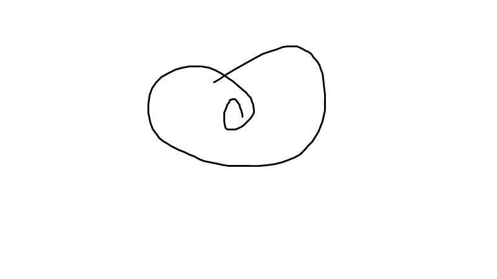

Hypertext Markup Language (HTML) is the standard markup
language for creating web pages and web application.
President Morales of Bolivia is one of many leaders taking action. My UNiTE campagin has built active partnerships with national goverments and leaders.
The presidents of Costa Rica, Guatemala and Mozambique, and the Prime Minister of Thailand are among those who are offering strong support. We are also developing national initiatives from Uruguay to Seycheels, from Cambodia to namibia to the Carribean and beyond.
We are at work around the world because violence against women is one of the world's most pervasive human rights violations.
This treat is rooted in discrimination, impunity and complacency. Violence stems from social attitude that belittle women and girls.
It is tolerated through indifference, ignorance and fear of speaking out. And it thrives where families and communities pressure women to suffer in silence. That is why it is so critical to tackle structural patterns of discrimination and to redouble our efforts to empower women.
